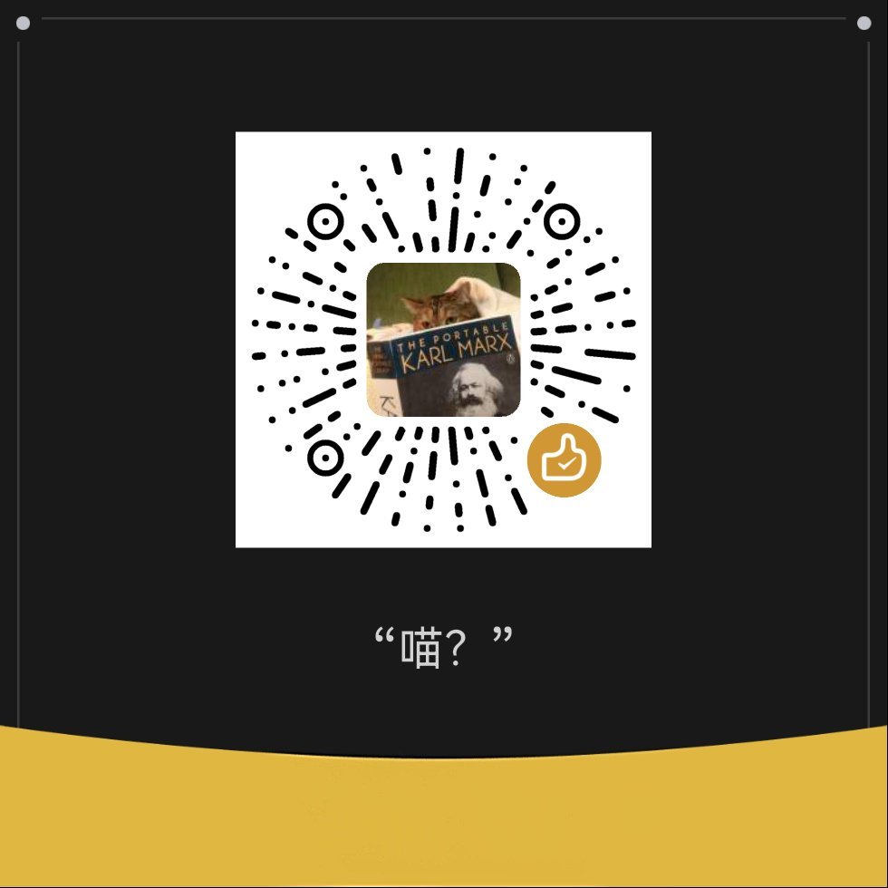

COPYww
@copymellowclip
乞讨喵、我会用来买衣服买游戏和吃饭。
无论打不打钱都可以互fo和私信
福利的话可以穿指定色系/风格的服装、指定举着的写字牌、指定动作之类的一张照片。

COPYww
@copymellowclip
我是COPY（复制、拷贝……？）
照片都是本人喵、不支持点菜没有门。
喜欢我可以给我打钱，现在没有收入全靠家底……
绝赞宅家中0社交欢迎和我互fo、私信聊天，我真的很无聊TT
可选话题：物理天文、Linux、游戏、漫画轻小说动画、哲学，我还会一点画画、建模、摄影、视频剪辑、捏毛、手作服装、作曲 https://t.co/VJfYj2WwyI